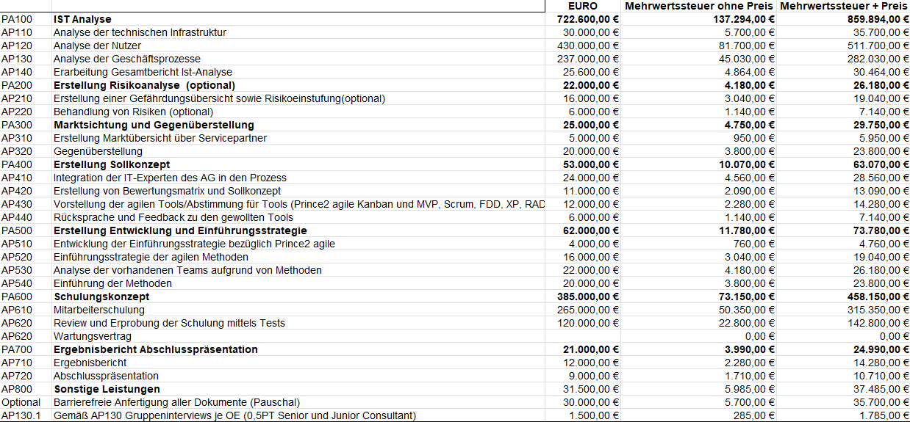

Das bin ich
Name:
Georgios KyloudisAlter:
23Mein Mantra:
"Ich bin ich und ich tue alles, mein Schicksal zu bestimmen."Nationalitäten:
Interessen:
Projekte vorantreiben und Menschen sowie Unternehmen einen Mehrwert liefern. Ich bin sehr hilfsbereit, rede gerne mit Menschen, analysiere die Fähigkeiten von Freunden und Bekannten und arbeite zielstrebig daran, Probleme zu lösen.Mein Traum:
Nach dem Studium im Consulting tüchtig zu werden, zwei Hunde zu adoptieren, eine liebende Frau kennenzulernen und das zu tun, was mich meine gesamte schulische Laufbahn angetrieben hat.Mein Antrieb in meiner schulischen Laufbahn:
Projekte leiten und achtsam beim Abschließen dieser die Mitglieder zu begleiten und zum Erfolg zu führen, dies merkte ich bereits, als ich meine Mitschüler und auch Kommilitonen zum Arbeiten angeregt habe.Projekte im Studium, die ich leiten durfte
In diesem Abschnitt gehe ich auf die Projekte in meinem Lebenslauf ein, die ich geleitet habe und die mir besonders am Herzen liegen. Ich erkläre, was meine Aufgaben waren, wie ich sie bewältigt habe und wie die Ergebnisse aussehen.Geleitetes Projekt 1:
Vermittlung von agilen und innovativen Führungsansätzen an StudierendeModul: Kommunikation, Führung, Selbstmanagement
Aufgabenstellung: Anfertigung einer Übersicht, um den anderen Studierenden die
Wichtigkeit von agiler und innovativer Führung zu vermitteln.
Vorwort:
Die Dozentin stellte die Themenbereiche des KFS-Moduls vor, fragte die Studenten nach einem
Themenbereich, der diese besonders interessiert hat. Somit konnten willkürlich Studierende in Gruppen
gelangen, was zum Kennenlernen führte und am Anfang des Semesters die Zusammenarbeit erschwerte. Ich
schrieb die Studierende an und erstellte eine WhatsApp-Gruppe, um auf dem Laufenden zu bleiben.
Meine Tätigkeiten und wie ich die Gruppe zum Erfolg geleitet habe
- Fähigkeitsermittlung der Studierenden
- Planung der Arbeitsschritte, wöchentlichen Meetings und Aufarbeiten der Inkremente
- Gerechte Verteilung der Arbeitsschritte
- Zeitplanung und Rücksprache mit der Dozentin
- Qualitätssicherung der Präsentation
- Vermittlung des angewandten Wissens beim Vermitteln an die restlichen Studierenden
Unsere Lösung bestand daraus, die Führungsansätze der innovativen Führung zu verbildlichen und die wichtigsten agilen Methoden vorzustellen. Die Präsentation war sehr erfolgreich, und die Studierenden haben viel gelernt.

Download der Präsentation: Innovative_und_agile_Führung.pptx
Geleitetes Projekt 2:
Erstellung eines Angebotsschreibens, eines Pflichtenhefts und einer Rechnung an das fiktive Unternehmen Lakeshore ITModul: Projektmanagement
Aufgabenstellung:
Vorwort: Der Dozent teilte die Studierenden im Modul in zwei Teams. Zum einen gab es
das Team der Arbeitgeber,
welches die Aufgabe hatte, ein Lastenheft zu erstellen. Mein Team und die restlichen Studierenden waren
IT-Berater und Projektmanager. Und unsere Aufgabe war es, ein Angebotsschreiben, ein Pflichtenheft und
eine grobe Rechnung zu erstellen, in welcher alle fiktiven Mitarbeiter fair bezahlt werden, zu
erarbeiten.
Unsere Gruppen wurden willkürlich zusammengestellt. Ich war aber motiviert und arbeitete durch das Lernmaterial und vernetzte mich mit den anderen Teammitgliedern, berichtete diesen, wovon das Modul handelt und fand heraus, wie weit jedes Mitglied im Bereich Projektmanagement Wissen mitbringt. Diese Initiative führte dazu, dass alle Mitglieder meine Führungsqualität anerkannten und mich zum Gruppenleiter ernannten.
- Herausfinden, welche Aufgaben die Arbeitgebergruppe gelöst haben möchte
- Aufgaben dem Team erörtern und einteilen
- Alle zwei Wochen Briefings mit dem Dozenten halten und dem Team den Fortschritt der Inkremente nahelegen
- Zeitmanagement mit Toggl durchführen und Verbesserungssprints wöchentlich vorbereiten und gemeinsam am Pflichtenheft arbeiten.
- Darauf achten, dass alle Teammitglieder gleich viel lernen.
- Ermitteln durchschnittlicher Preise für Consultants und Projektmanager.
Als SAP99 GmbH haben wir auf das Angebot von Lakeshore IT geantwortet und ein Angebotsschreiben, ein Pflichtenheft und eine Rechnung erstellt, Lösungen für die Probleme vorgeschlagen und professionell wie wir waren, die Preise für die Consultants und Projektmanager ermittelt.
Download des Pflichtenhefts: Pflichtenheft_SAP99.pdf,
Download des Angebotsschreiben: Angebotsschreiben_Angebotsanfrage_SAP99.pdf

Download der Rechnung: Kalkulation_der_Preise.xlsx,
Geleitetes Projekt 3:
Einen langweiligen Aspekt eines Unterrichtsfachs in der virtuellen Realität modellieren, gamifizieren und präsentieren im Modul "Wirtschaftsinformatik-Workshop"Modul: Wirtschaftsinformatik-Workshop
Aufgabenstellung Gamifizierung eines Studien- oder Schulfachs unserer Wahl und
Konzeptionierung inklusive eines MVP.
Meine Tätigkeiten und wie ich die Gruppe zum Erfolg geleitet habe
- Aufgaben innerhalb des Teams verteilen, basierend auf Fachwissen und Interessen.
- Wöchentliche Meetings planen und starten.
- Den Fortschritt mithilfe eines Trello-Boards verfolgen und sicherstellen, dass alle Aufgaben erledigt werden.
- Zeitplanung und Deadlines einhalten.
- Den Diskurs mit der Dozentin und dem Team berichten.
Das Konzept zum Gamifizieren des Moduls "Bool'sche Algebra" ist, verschiedene Escaperooms mit Logikpuzzeln zu erstellen, die mithilfe von Logikgattern gelöst werden können. Unser Minimum Viable Product (MVP) zeigt den Tutorialraum und den Beweis, dass Bool'sche Algebra spielerisch beigebracht werden kann. Zum Zeitpunkt des Erstellens ist der MVP beim letzten Zurücksetzen meines Computers verloren gegangen, aber ich versuche diesen momentan wiederherzustellen.
Download der Präsentation: Bool'sche Algebra als Labyrinth.pptx
Zertifikate und Urkunden
Ich habe in meiner schulischen Laufbahn einige Zertifikate und Urkunden erworben. Hier sind einige davon:
- IT-Essentials.pdf Jahr: 2019
- Elektro-Assistent im IT-Bereich Zertifikat.pdf Jahr: 2018
- Erste-Hilfe -Urkunde.pdf Jahr: 2010
Kontaktinformationen
E-Mail: KyloudisGeorgios@gmail.com
LinkedIn: linkedin.com/in/georgios-kyloudis
Telefonisch erreichbar unter: +49 176 35 49 5445